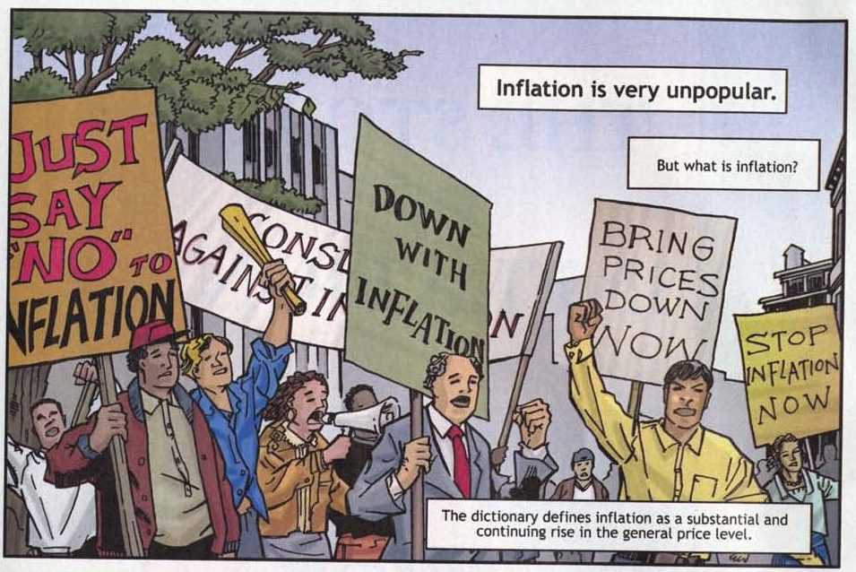

How it works: read the comic pages → answer the question about today's big idea → read the fact file → write 1–2 sentences. Done = all parts green, then turn in at the bottom.
Word help (tap to open)
- Inflation = prices keep going up
- Stagflation = high prices + lots of people out of work, at the same time
- Embargo = a ban on trade
- Conservative = wants lower taxes, smaller government, a strong military, traditional values
- Liberal = wants government to do more to help people and set rules
- Pension = money a retired worker gets each month
- Lender = someone who loans money
- CPI = a measure of what everyday things cost. The chart shows how fast it rose each year.

Click the page to make it bigger.
Turn in your work
Your work saves on this device, so you can come back later. Your teacher sees it after you turn it in.
Comic: The Story of Inflation, Federal Reserve Bank of New York, a free classroom comic (2006 edition; story by Ed Steinberg, revised by Steven Malin, art by Jesse Chen). Scan via the Internet Archive. Cropped to today's reading.